无鱼工时系统使用手册¶
1、使用环境¶
需使用支持HTML5的浏览器，推荐谷歌、EDGE、火狐、360等主流浏览器。
2、使用流程¶
通过浏览器进行登录使用。
为便于用户操作，简述以下使用流程:
第一步：管理员登录
系统安装后，默认管理员
admin/12345678
第二步：创建用户
2.1.创建用户角色
2.2.创建用户岗位
2.3.创建用户 创建用户之前必须要先创建角色和岗位
第三步：创建项目
3.1.创建项目
并设置项目经理（在此之前需要先把项目经理的用户创建好）
3.2.添加项目成员
将项目成员添加到项目中
第四步：开始使用
用户通过自己的账号登录系统，开始填报工时或者查看项目工时统计信息。
第五步：修改系统信息（可选）
5.1修改系统的登录名字
5.2修改系统名称
5.3.修改系统logo
3、操作说明¶
3.1、登录¶
1.在浏览器中输入系统地址，首次登录账号/密码：admin/12345678。
2.登录流程图如下
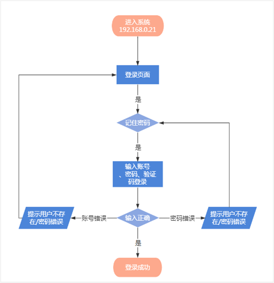
1.功能说明¶
登录账号信息进入系统。
2.界面说明¶
输入错误账号及密码信息系统提示错误信息，输入正确用户信息正常进入系统内部。
3.操作详解¶
(1) 输入错误账号密码信息，点击登录按钮系统提示该用户不存在提示信息；
(2) 输入正确用户名错误密码点击登录按钮，系统提示的对应的提示信息。
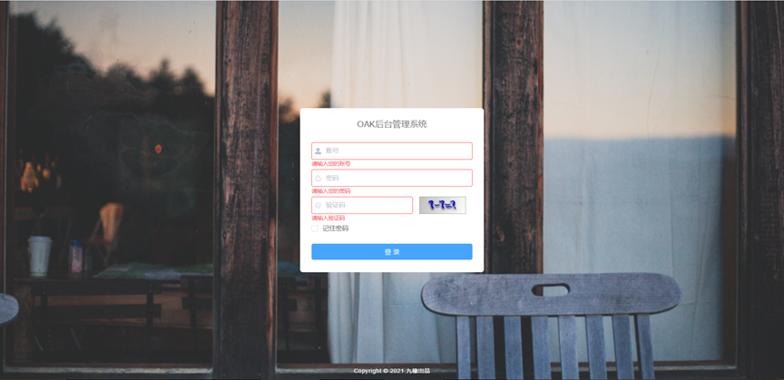
4.输入正确的用户名及密码信息，点击登录按钮系统跳转到系统默认页，可查看到可操作菜单权限。
3.2、管理栏¶
导航栏¶
管理下的导航栏包括了项目管理、角色管理、职位管理、用户管理、项目设置模块。
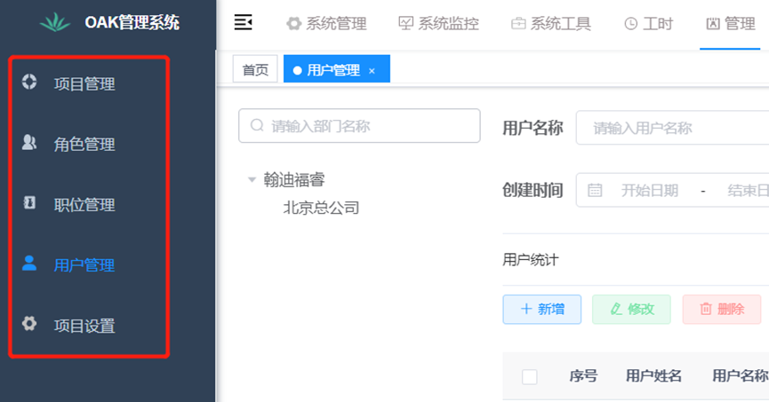
角色管理¶
1.功能说明
用户可在角色管理中新增角色、修改角色、删除角色、导出角色。
2.界面说明 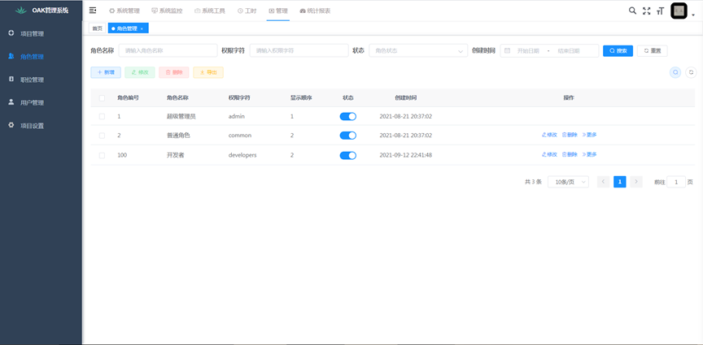
3.操作详解
(1) 筛选栏：通过角色名称、权限字符、状态、创建时间对角色进行筛选，点击重置按钮筛选项会清空。
(2) 新增角色：点击页面的新增按钮，弹出添加角色弹框，依次输入必填项角色名称、权限字符、角色顺序，在菜单权限中为该角色选择权限，点击确定按钮，列表添加新输入的角色。
(3) 修改角色：点击操作下的修改按钮，输入要修改的角色信息，点击确定按钮，列表显示最新修改的角色信息。
(4) 删除角色：点击操作下的删除按钮，弹出警告‘是否确认删除角色编号为"XXX"的数据项?’，点击确定按钮，数据将从角色列表中删除；勾选角色前面的复选框，点击页面的删除按钮，可批量删除角色。
(5) 导出角色：点击页面的导出按钮，弹出警告‘是否确认导出所有角色数据项?’，点击确定按钮，角色列表的数据将会以文档的文件保存在电脑中。
(6) 状态：选择想要改变状态的数据，点击状态下的按钮数据将会被禁用，新增用户时此角色将为不可选。
职位管理¶
1、功能说明
用户可在职位管理中新增职位、修改职位、删除职位、导出职位。
2、界面说明
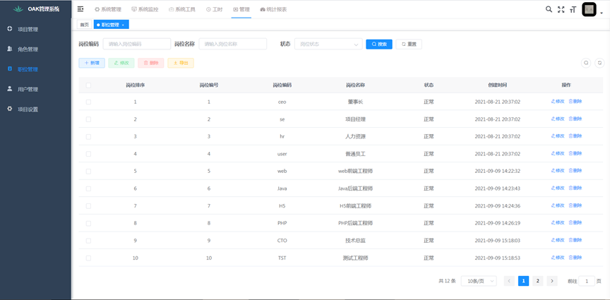
3、操作详解
(1) 筛选栏：通过岗位编码、岗位名称、状态对职位进行筛选，点击重置按钮筛选项会清空。
(2) 新增职位：点击页面的新增按钮，弹出添加岗位弹框，依次输入必填项岗位名称、岗位编码、岗位顺序，点击确定按钮，列表添加新输入的职位。
(3) 修改职位：点击操作下的修改按钮，输入要修改的职位信息，点击确定按钮，列表显示最新修改的职位信息。
(4) 删除职位：点击操作下的删除按钮，弹出警告‘是否确认删除岗位编号为"XXX"的数据项?’，点击确定按钮，数据将从职位列表中删除；勾选角色前面的复选框，点击页面的删除按钮，可批量删除职位。
(5) 导出职位：点击页面的导出按钮，弹出警告‘是否确认导出所有岗位数据项?’，点击确定按钮，职位列表的数据将会以文档的文件保存在电脑中。
用户管理¶
1.功能说明
用户可在用户管理中新增用户、修改用户、删除用户。
2.界面说明
 3.操作详解
3.操作详解
(1) 筛选栏：通过用户名称、手机号码、状态、创建时间对用户进行筛选，点击重置按钮筛选项会清空。
(2) 新增用户：点击页面的新增按钮，弹出添加用户弹框，依次输入必填项用户姓名、选择归属部门、输入用户名称、用户密码（默认密码为123456）、选择岗位(单选)、角色(单选)，点击确定按钮，列表添加新输入的职位。
(3) 修改用户：点击操作下的修改按钮，输入要修改的用户信息，点击确定按钮，列表显示最新修改的用户信息。
(4) 删除用户：点击操作下的删除按钮，弹出警告‘是否确认删除用户编号为"XXX"的数据项?’，点击确定按钮，数据将从用户列表中删除；勾选角色前面的复选框，点击页面的删除按钮，可批量删除用户。
(5) 用户统计：点击用户统计可查看用户总人数、每个岗位的总人数，再次点击总人数收起。
(6) 重置密码：点击操作下的更多-重置密码，弹出提示框‘请输入“XXX”的新密码’，用户密码的长度必须介于5和20之间，点击确定按钮，提示‘修改成功，新密码是：XXXXXX’。
(7) 分配角色：点击操作下的更多-分配角色，跳转到分配角色页面，可为该用户更换角色。
(8) 显隐列：点击页面的显隐列图标，可选择需要隐藏/显示的列。
项目管理¶
1.功能说明
用户可在项目管理中创建项目，设置项目的人员添加、预计项目完成工时、项目转为运维或归档。
2.界面说明 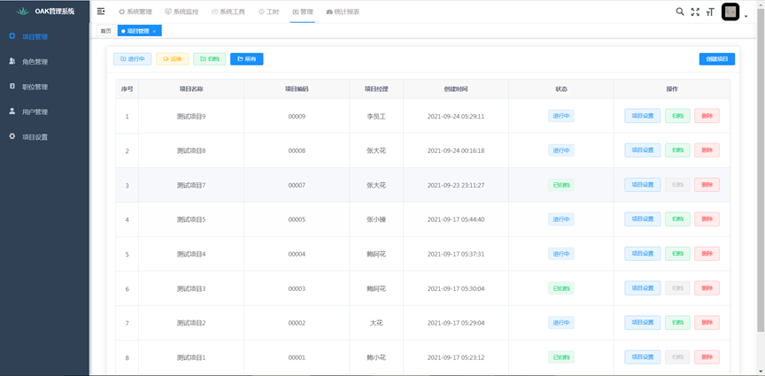
3.操作详解
(1) 新增项目：点击页面的创建项目按钮，弹出创建项目弹框，依次输入必填项姓名名称、项目编码、预计投入工时，选择人天/人月、选择项目经理，点击确定按钮，列表添加新输入的项目。
(2) 状态：状态分为三类，进行中、运维中、已归档，新创建的项目状态为进行中，在项目设置-项目管理中可将项目转为运维和归档项目。
(3) 删除项目：点击操作下的删除按钮，该项目将从项目列表中删除。
项目设置¶
1.功能说明
用户可在项目设置中设置项目，需要在项目管理中的操作下点击项目设置进行设置，若直接点击项目设置，提示‘请先选择项目’。
2.界面说明 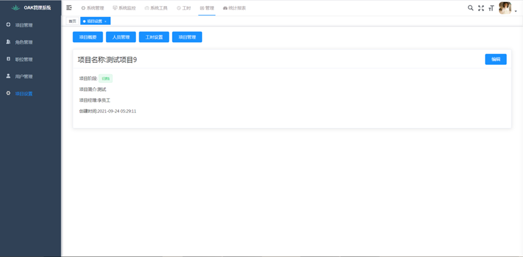
3.操作详解
(1) 项目概要：主要描述项目的具体信息，项目名称、项目阶段、项目简介、项目经理、创建时间；点击编辑按钮，可对项目内容进行修改，项目概要展示修改后的项目信息。
(2) 人员管理：为项目添加人员，点击添加人员按钮，弹出添加人员弹框，左侧列表展示的是所有成员，在左侧列表中选择该项目需要添加的人员，选择好的人员将会在右侧列表展示，点击确定按钮，此项目下将会添加选择的人员，项目成员信息也会展示人员职位的统计。
(3) 工时设置：显示新增项目时填写的预计投入工时，点击编辑按钮可修改预计投入工时，工时单位为小时，一人天为8小时。
(4) 项目管理：点击转为运维按钮，此项目的状态将改变成运维中；点击归档项目，此项目的状态将改变成已归档；归档后的项目也可以再次转为运维。
3.3、工时栏¶
导航栏¶
工时下的导航栏包括了我的工时、我的统计、项目统计、项目详情模块。 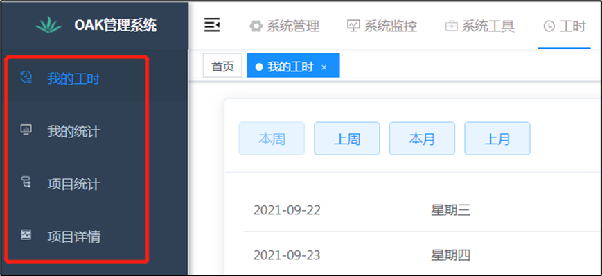
我的工时¶
1、功能说明
用户可在我的工时中提交工时、查看工时详情，我参加过的项目都会在我的工时中显示。
2、界面说明 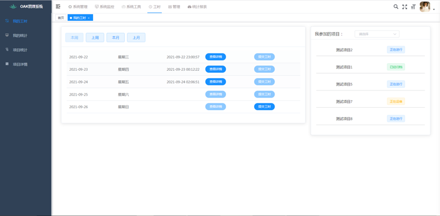 3、操作详解
(1) 提交工时：点击提交工时按钮，弹出工时填报弹框，弹框中展示此用户所参加过的项目，在需要填报工时的项目中输入工时，单位为小时，提交后点击查看详情可以进行工时操作修改。
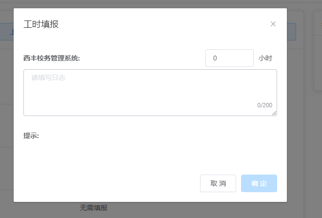
(2) 请假/调休，可进行请假/调休，请假后该日将显示为请假/调休。 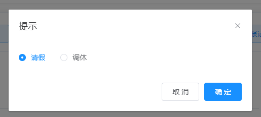
(3) 导航筛选：筛选分为本周、上周、本月、上月四项，点击可查看对应工时信息。
(4) 我参加过的项目：对参加过的项目进行筛选，状态分为进行中，运维中，已归档，选择后列表显示对应状态的数据。
我的统计¶
1、功能说明
用户可在我的统计中查看所有我参加的项目提交工时的情况。
2、界面说明 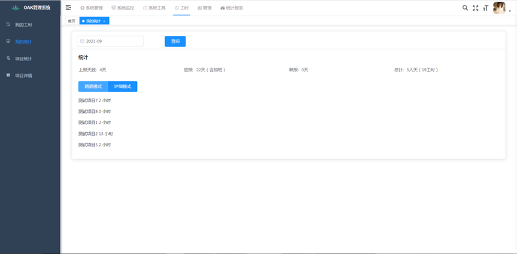
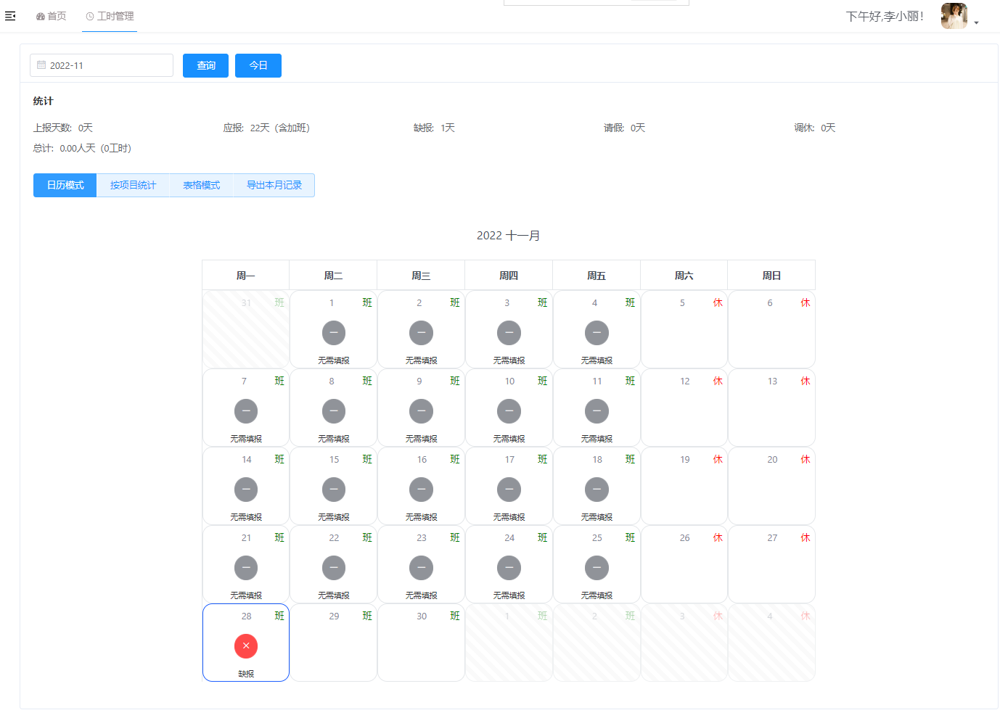 3、操作详解
(1) 上报天数：统计用户当月提交工时的天数，与我的工时中提交过的天数相对应。
(2) 应报天数：统计用户当月应报多少天数（含加班），与日历中的上班天数像对应。
(3) 缺报天数： 统计用户当月缺报的天数，与我的工时中未提交过的天数相对应。周末等节假日未提交不会计算到缺报中。
(4) 总计：总计天数根据用户每个项目提交的工时计算，8小时为一天。
(5) 精简模式：默认展示每个项目提交的工时信息。
(6) 详细模式：以日历的形式体现每天提交的工时信息，在左侧中点击要查看的天数，右侧列表中展示对应的项目提交工时。日历中只能点击提交过工时的，哪天提交过工时会在日历中增加蓝色边框样式，代表可点击状态。
(7) 筛选年/月：在筛选框中选择要查询的年/月，点击查询按钮，列表会出现对应年/月的提交工时数据。
项目统计¶
1、功能说明
用户可在项目统计中查看所有项目提交工时、上报记录的情况。
2、界面说明 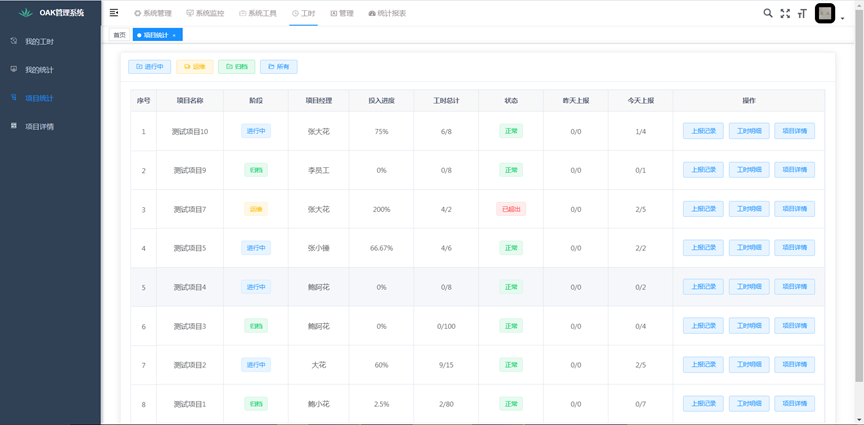 3、操作详解
(1) 投入进度：统计当前项目的总投入进度（实际工时除以预计工时）。
(2) 工时总计：实际工时/预计工时。
(3) 状态：如果实际工时大于预计工时，则状态会变成已超出。
(4) 昨日上报：昨日上报人数/昨日项目总人数。
(5) 今日上报：今日上报人数/今日项目总人数，如今日往项目组里添加人员，则会重新计算项目总人数，但昨日上报的项目总人数不会改变。
(6) 上报记录：点击上报记录跳转到上报记录页面，页面显示当天的上报人数、工时、累计投入天数与已上报人员与和未上报人员；在筛选中选择要查看的年月日，点击查询按钮，列表出现对应的工时上报记录。 上报记录可以通过日历和表格两种模式进行查看。
日历模式：
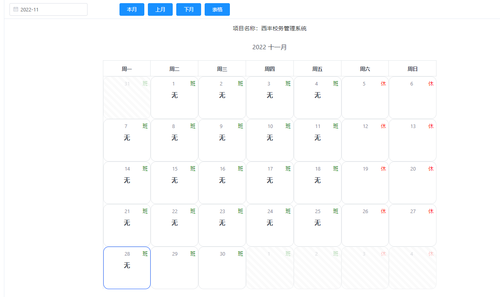
表格模式：
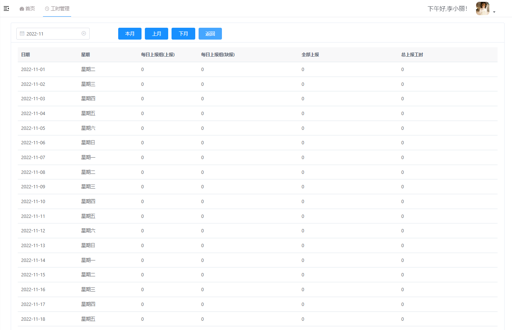
(7) 工时明细：点击工时明细跳转到总工时页面，默认显示按月统计，点击按人统计按钮可查看当前项目下人员的提交工时明细。
3.4、个人中心¶
功能说明¶
用户可在个人中心页面进行查看、修改用户信息及修改密码。
界面说明¶
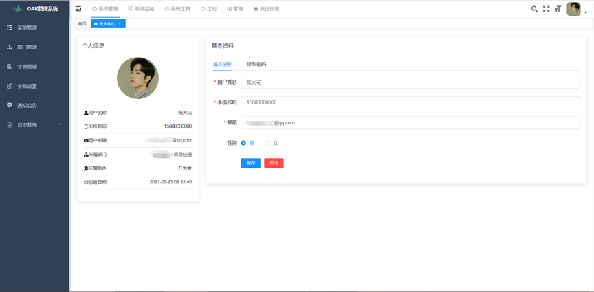
操作详解¶
(1) 个人信息：用户可在个人信息中修改用户头像，点击头像图标，弹出修改头像弹框，选择图片进行上传头像，点击提交头像修改完成。
(2) 基本资料：在基本资料中进行修改用户基本信息，修改后点击保存，左侧个人信息会同步修改。
(3) 修改密码：点击修改密码，依次输入旧密码、新密码、确认密码，点击保存按钮，下次登录时则需要用新密码进行登录。